UDN
Search public documentation:
CurveEditorUserGuideCH
English Translation
日本語訳
한국어
Interested in the Unreal Engine?
Visit the Unreal Technology site.
Looking for jobs and company info?
Check out the Epic games site.
Questions about support via UDN?
Contact the UDN Staff
日本語訳
한국어
Interested in the Unreal Engine?
Visit the Unreal Technology site.
Looking for jobs and company info?
Check out the Epic games site.
Questions about support via UDN?
Contact the UDN Staff
曲线编辑器用户指南
概述
布局

工具栏
 | 使这个图表在水平方向上适合于当前可见轨迹。 |
 | 使这个图表在垂直方向上适合于当前可见轨迹。 |
| 使这个图表在水平和垂直方向上都适合于当前可见轨迹的所有点。 | |
 | 使这个图表在水平和垂直方向上都适合于当前可视轨迹的选中点。 |
 | 将曲线编辑器设置为 平移/编辑 模式。 |
| 将曲线编辑器设置为 缩放 模式。 | |
 | 将所选按键的 InterpMode 设置为 自动曲线 模式。锁定的平整三角形。 |
 | 将所选按键的 InterpMode 设置为 用户曲线 模式。锁定的用户修改过的三角形。 |
| 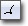 | 将所选按键的 InterpMode 设置为 曲线切断 模式。分离输入和输出三角形 |
 | 将所选按键的 InterpMode 设置为 线性 模式。 |
 | 将所选按键的 InterpMode 设置为 常量 模式。 |
 | 将所选按键的三角形设置为水平方向平整。 |
 | 在所选按键的三角形发生弯曲的时候将其拉直。 |
| 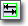 | 创建一个新的选项卡。 |
 | 列出并允许选择现有的选项卡。 |
| 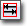 | 删除当前的选项卡。 |
轨迹列表
 轨迹列表会显示当前加载到选项卡中的曲线轨迹。轨迹通常可以在曲线编辑器外部通过在 Matinee 或 Cascade 的 Module 中按下一个与轨迹相关的按钮进行加载。
轨迹列表会显示当前加载到选项卡中的曲线轨迹。轨迹通常可以在曲线编辑器外部通过在 Matinee 或 Cascade 的 Module 中按下一个与轨迹相关的按钮进行加载。
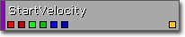
轨迹列表中的每个轨迹都会显示与这个轨迹相关的属性名称，以及在轨迹中每个单独曲线的可视性切换按钮和整体可视性切换按钮。单独的曲线可见性切换按钮是对应向量的分量进行颜色编码的，红色为 X，绿色为 Y 以及蓝色为 Z。红色还是用做单独的标量浮点值的颜色。在 VectorUniformDistribution 实例中，有两组曲线，其中每个颜色都有一个较亮和较暗的版本。 在轨迹列表中右击一个轨迹可以调出轨迹列表关联菜单。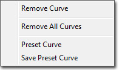
- Remove Curve - 可以从曲线编辑器中删除当前轨迹。
- Remove All Curves - 从所有选项卡中清除曲线编辑器中加载的所有轨迹。
- Preset Curve - 可以将当前轨迹的曲线替换为一个预置曲线。
- Save Preset Curve - 可以将当前轨迹的曲线保存为一个预置曲线。
图表
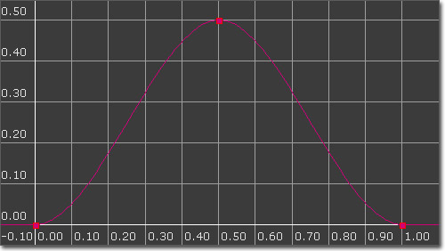
这个图表占据了大部分曲线编辑器界面。它是曲线的图表表现形式，横轴是时间（输入值），纵轴是属性值（输出值）。将曲线上的帧显示为点，选择这些点进行控制，可视化地编辑曲线。 右击这个图表调出图表关联菜单：
- Scale Times - 缩放所有可视轨迹上所有点的时间值，例如，水平方向缩放。
- Scale Values - 缩放所有可视轨迹上所有点的值，例如，垂直方向缩放。

- Set Time - 允许手动设置点的 Time（时间）。
- Set Value - 允许手动设置点的值。
- Delete - 可以删除所选的点。
控制
鼠标控制
在 平移/编辑 模式中：| 在背景上按下 LMB + Drag | 到处平移视图 |
| 鼠标滚轮 | 缩放控制 |
| 在按键上按下 LMB | 选择点 |
| 在点上按下 Ctrl + LMB | 切换点的选中状态 |
| 在曲线上按下 Ctrl + LMB | 在点击处添加新的关键点 |
| Ctrl + LMB + 拖拽 | 移动当前选择 |
| Ctrl + Alt + LMB 拖拽 | 通过鼠标拖动的方框进行区域选择 |
| Ctrl + Alt + Shift + LMB + 拖拽 | 通过鼠标拖动的方框进行区域选择（添加到当前的选项中） |
| LMB + 拖拽 | 缩放 Y 轴 |
| RMB + 拖拽 | 缩放 X 轴 |
| LMB + RMB + 拖拽 | 缩放 X 和 Y 轴 |
键盘控制
在 平移/编辑 模式中：| Delete | 删除选中的点 |
| Z | 当按下 Z 键时进入到缩放模式中。 |
热键
| Ctrl+Z | 取消 |
| Ctrl+Y | 重复 |
选项卡
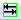
按钮可以轻松地创建新选项卡。命名新选项卡，其中可以包含任何数量的轨迹。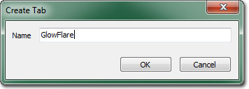
它在与由多个发射器组成的粒子系统结合使用时很有效。由于多个生命周期模块之间没有实质的区别，并不是在选择一个模块的情况下着色或者模块的颜色不同，所以将多个生命周期模块的曲线数据发送到曲线编辑器可能会变得非常混乱。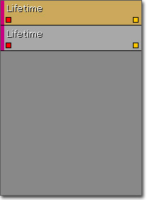
反复添加并删除轨迹来防止这样的情况发生是远远不够的。通过为每个发射器创建一个选项卡，可以使轨迹保持独立并容易识别，以防对错误发射器的错误轨迹进行任何错误的编辑。
插值模式
自动生成曲线
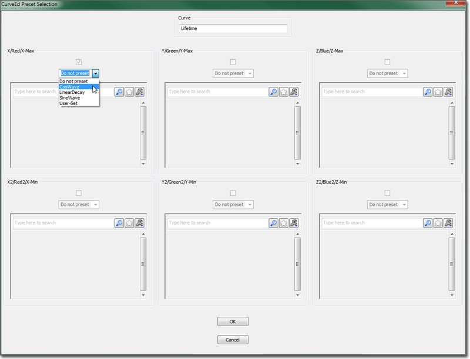
在预置下拉组合框中，可选择下列选项：- Do Not Preset（不进行预置） - 让曲线保持现状。
- Cos Wave（余弦波） - 生成一条用时间（水平）值作为余弦函数（垂直数值）输入的曲线。
- Sine Wave（正弦波） - 生成一条用时间（水平）值作为正弦函数（垂直数值）输入的曲线。
- Linear Decay（线性衰减） - 生成一条曲线，具有线性衰减功能。
- User-Set（用户设置） - 允许加载和使用先前保存的用户设置曲线。
- Frequency（频率） - 在一定时间内的波频（目前限定为 [0.0..1.0]）。
- Scale（比例） - 按照该比率系数，成倍缩放已计算出的数值。允许调整曲线尺寸，满足用户需求。
- Offset（偏移） - 与相关数值（比例缩放后）相对应的偏移。这将确保所有数值均为正值，等等。
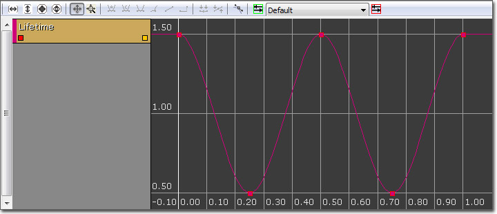
选定 Linear Decay 预置后，将显示下列设置参数：- StartDecay - 开始衰减的时间。
- StartValue - 曲线起始点的数值。
- EndDecay - 停止衰减的时间。
- EndValue - 终止衰减处的数值。
 注意此情况下的曲线需要一些调整。默认情况下，所有自动生成的曲线采用 AutoSet（自动设置）曲线插值方法。在 Linear Decay（线性衰减）的情况下，选点并设置插值的方法将“修正”这条曲线。
注意此情况下的曲线需要一些调整。默认情况下，所有自动生成的曲线采用 AutoSet（自动设置）曲线插值方法。在 Linear Decay（线性衰减）的情况下，选点并设置插值的方法将“修正”这条曲线。
用户设置曲线
- 不进行预置 - 不保存这个曲线。
- 用户设置 - 保存这个曲线。
 在通用浏览器中选择您希望把这个曲线保存到的曲线对象，点击属性窗口上的
在通用浏览器中选择您希望把这个曲线保存到的曲线对象，点击属性窗口上的  按钮。点击 OK 按钮，您将会把这条曲线保存到已选定曲线对象的目录中。
现在用户可以通过选择用户设置（User-Set）选项，并从通用浏览器中选择要使用的曲线来使用这条预置曲线了。
使用注意事项 1 ：有时，您通过预置组合框中的鼠标点击来选择一条选项时，它并未正确更新对话框。出现这种情况时，仅需选择组合框，使用上行和下行箭头，选择一个预置曲线选项。
使用注意事项 2 ：目前，预置曲线还不适用于 VectorUniformCurve（矢量平均曲线）分部。这个问题将会尽快修正。
使用注意事项 3 ：值得注意的是预置曲线仅为要在编辑器中使用的曲线提供一个模板。它们解决了反复创建相同曲线的问题，有效地节约了时间。CurveEdPresetCurve（曲线编辑器预置曲线）是一个简易的容器对象，用于存储与用户所保存的预置曲线相关的数据。它们不能用于“共享”不同对象间的曲线。
按钮。点击 OK 按钮，您将会把这条曲线保存到已选定曲线对象的目录中。
现在用户可以通过选择用户设置（User-Set）选项，并从通用浏览器中选择要使用的曲线来使用这条预置曲线了。
使用注意事项 1 ：有时，您通过预置组合框中的鼠标点击来选择一条选项时，它并未正确更新对话框。出现这种情况时，仅需选择组合框，使用上行和下行箭头，选择一个预置曲线选项。
使用注意事项 2 ：目前，预置曲线还不适用于 VectorUniformCurve（矢量平均曲线）分部。这个问题将会尽快修正。
使用注意事项 3 ：值得注意的是预置曲线仅为要在编辑器中使用的曲线提供一个模板。它们解决了反复创建相同曲线的问题，有效地节约了时间。CurveEdPresetCurve（曲线编辑器预置曲线）是一个简易的容器对象，用于存储与用户所保存的预置曲线相关的数据。它们不能用于“共享”不同对象间的曲线。